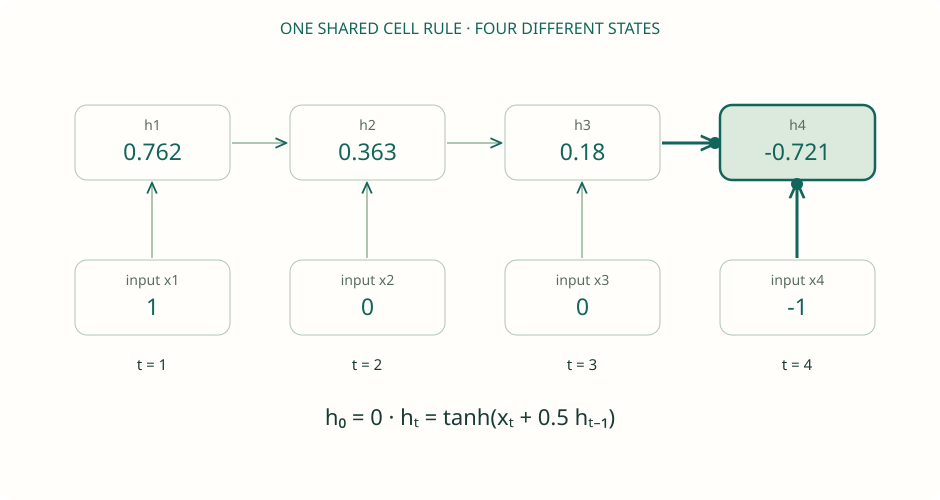
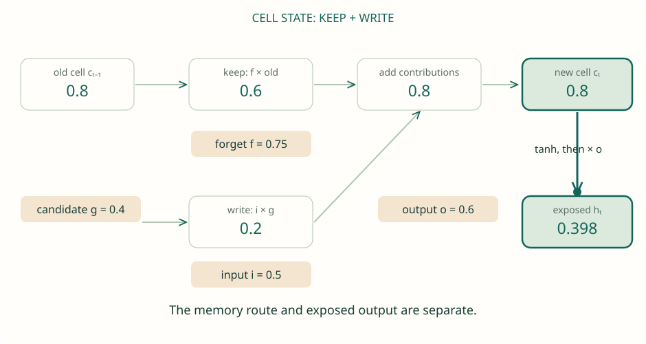
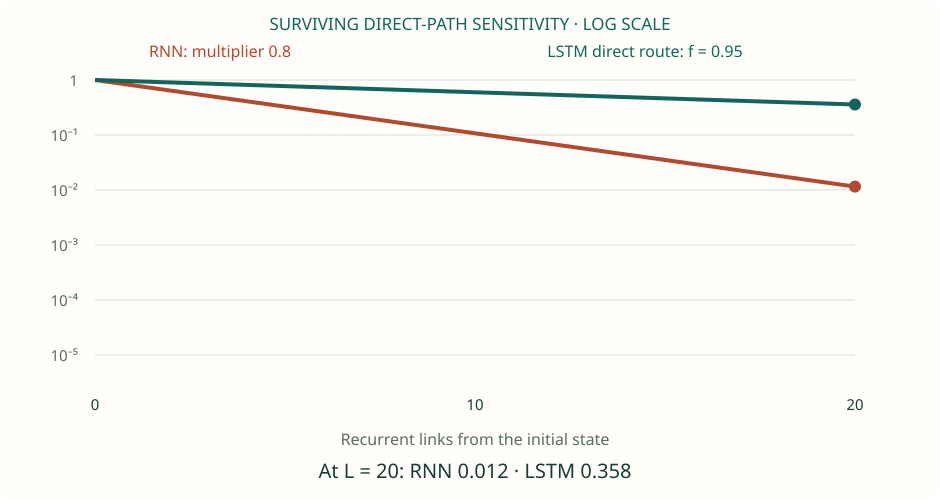
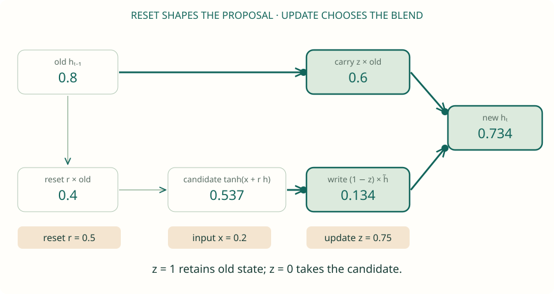
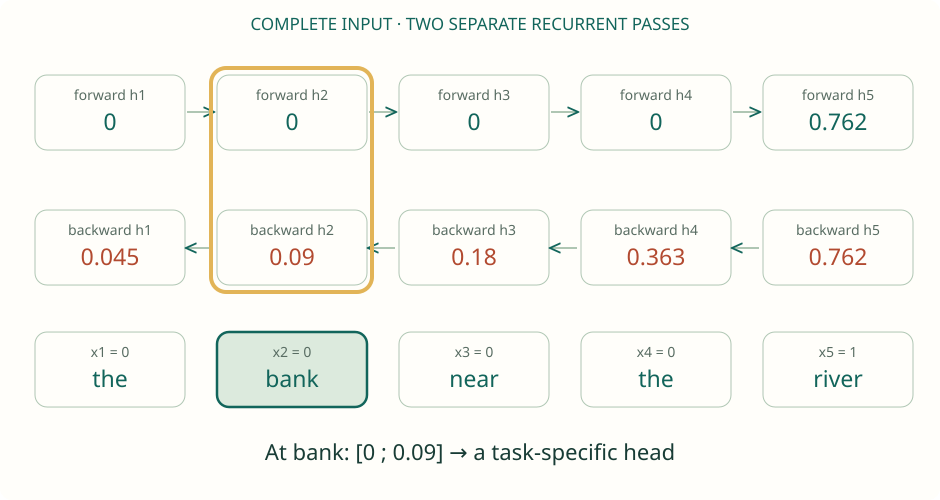

Original SVG teaching assets. These are final frames; the worksheet animates the steps with prediction pauses. Numbers are supplied examples, not trained predictions.
One clue. Many transformations.

Scalar RNN: h₀ = 0, input weight 1, bias 0. The four supplied inputs are [1, 0, 0, −1]. This is an arithmetic demonstration, not a trained language model.Download SVG · Open interactive lesson
Keep. Write. Reveal.

One coordinate of a modern LSTM with forget gate, without peepholes or projection. Gate outputs are manually supplied to isolate the mechanism. Real gates are vectors computed from xₜ and hₜ₋₁. Boundary values 0 and 1 are idealized limits.Download SVG · Open interactive lesson
Build a route for credit.

Controlled experiment: all write terms are zero, c₀ = h₀ = 1. The RNN comparison is linear with multiplier 0.8. LSTM gates are held constant, so the direct cell-state path has derivative fᴸ. This is not the full recurrent Jacobian or an accuracy measurement.Download SVG · Open interactive lesson
One state. Two gates.

Scalar reset-before-matrix GRU: x = 0.2, hₜ₋₁ = 0.8, input/recurrent weights 1 and bias 0. Here z is the fraction of OLD state retained. Some references swap z and 1 − z; some frameworks place reset after the recurrent projection.Download SVG · Open interactive lesson
Read both ways. Meet at the same word.

The sentences motivate ambiguity; the numbers are a supplied toy encoding, not learned semantics. x = [0, 0, 0, 0, ±1], scalar tanh cells, recurrent weight 0.5, zero boundary states. The two directions use separate parameter sets (chosen equal here for simplicity).Download SVG · Open interactive lesson
{kind=link}
{kind=link}
{kind=link}
{kind=link}
{kind=link}